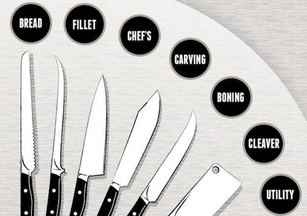

1. Prep a quick meal with veggies. Cook them quickly by steaming or stir-frying. 2. Use herbs, vinegar, tomatoes, onions and non-tropical vegetable oils instead of salt or high sodium seasonings, especially if you have high blood pressure. 3. Use your time and your freezer wisely. When you cook once, make it last longer by preparing enough for several other meals. Freeze it and have a ready-made healthy treat for the next time you are simply too tired to cook. 4. A smoothie can be a quick and delicious way to get more fruit in your diet. Throw a peeled banana (you can keep them in the freezer for weeks) into your blender along with frozen berries, kiwi or whatever fruit is around, some orange or other 100% juice, some unsweetened fat-free or low-fat yogurt. It’s easy, cool, refreshing and healthy. 5. Prepared seasonings can have high salt content and too much sodium can affect your blood pressure. Replace salt with herbs and spices or some of the salt-free seasoning mixes. Use lemon juice, citrus zest or hot chilies to add flavor. 6. Canned, processed and preserved vegetables can have very high sodium content. Look for “low-sodium” veggies or try the frozen varieties. Compare the sodium content on the Nutrition Facts label of similar products (for example, different brands of tomato sauce) and choose the products with less sodium. If you buy canned, rinse veggies under cold water to reduce the level of sodium. 7. Prepare muffins and quick breads with less saturated fat and fewer calories. Often, applesauce can be substituted for the oil in a recipe. 8. Choose whole grain for recipes instead of highly refined products. Use whole-wheat flour, oatmeal and whole cornmeal. 9. When choosing meals for the week, aim for recipes with fruits, vegetables, and whole grains that include skinless poultry, fish, legumes, and nuts. 10. Need a quick snack? Keep chopped fruit and veggies in the refrigerator so it’s ready to go when hunger strikes. Looking for something savory? Grab some unsalted nuts. Feeling something sweet? Keep some unsweetened, low-fat yogurt on hand.
